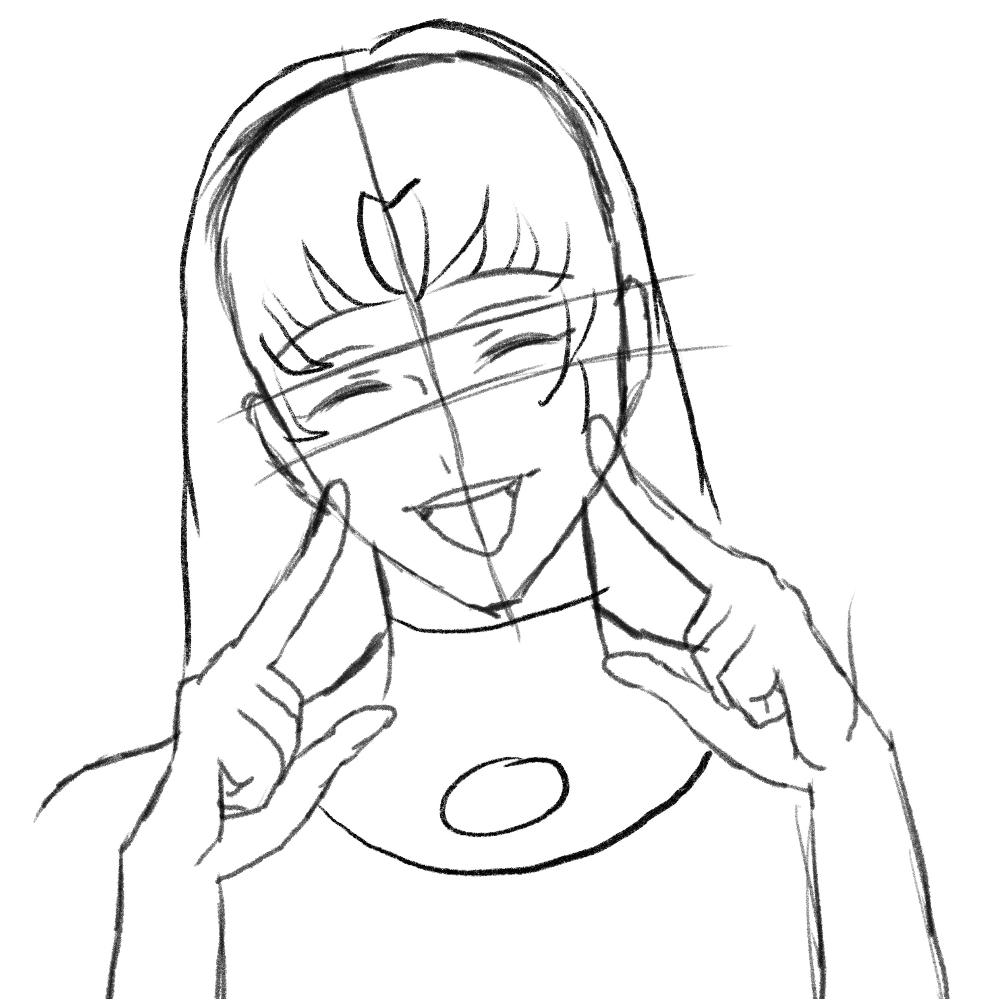
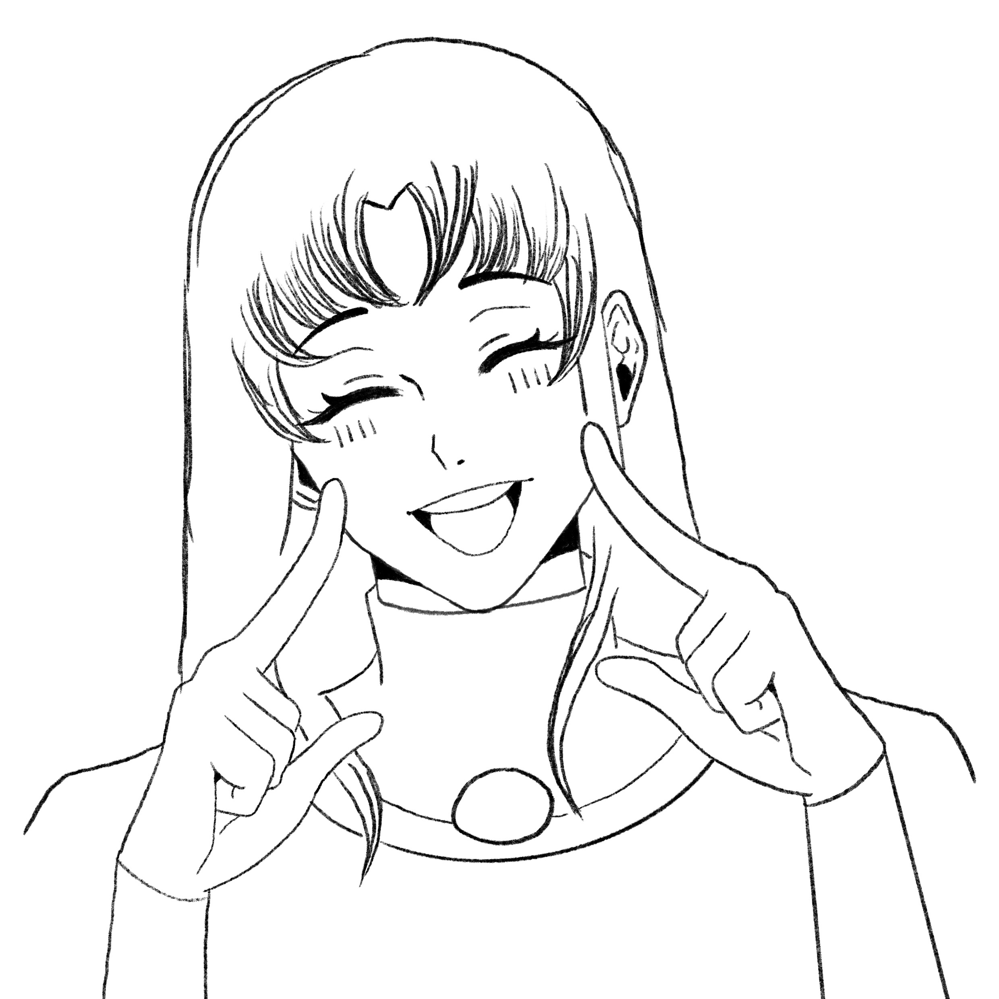
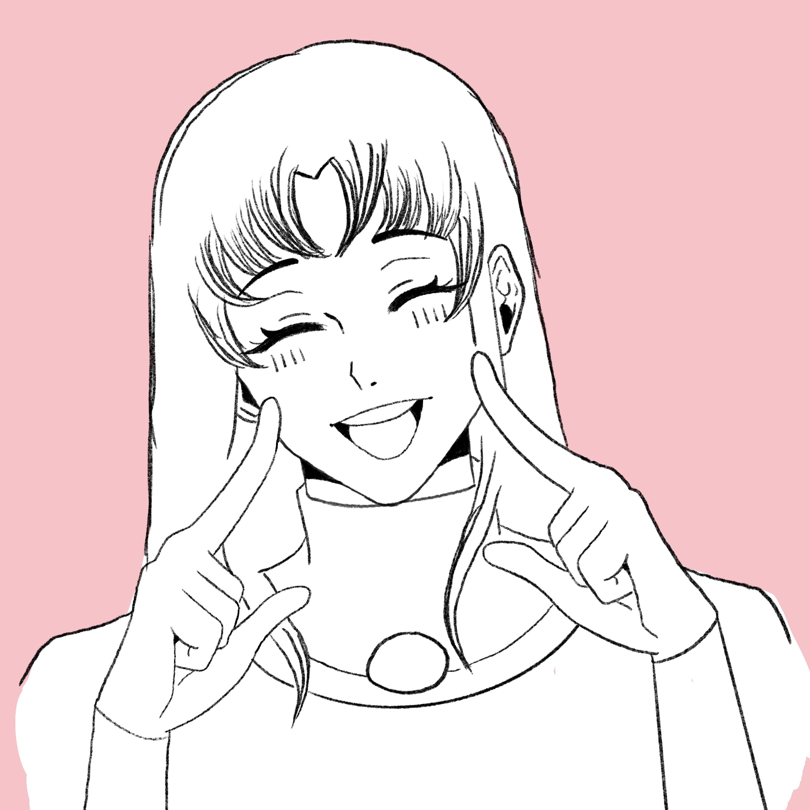
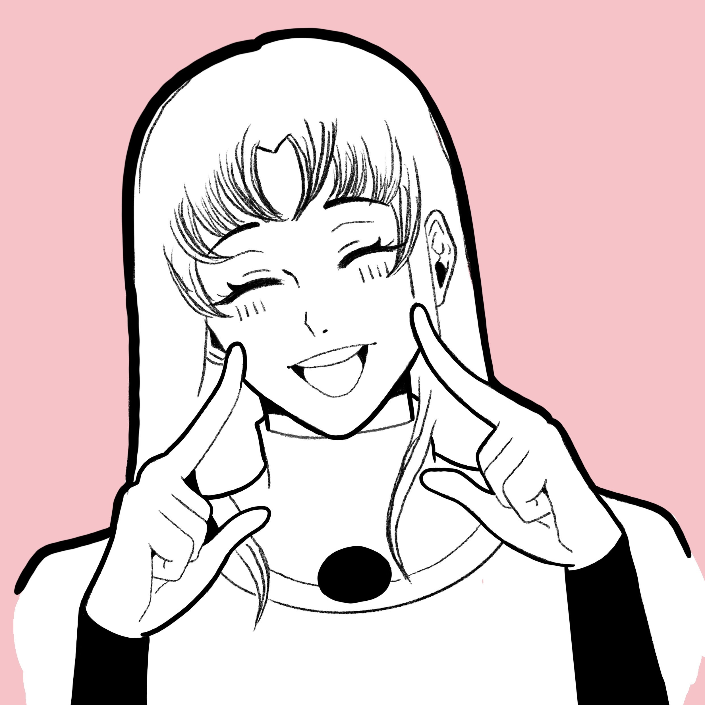
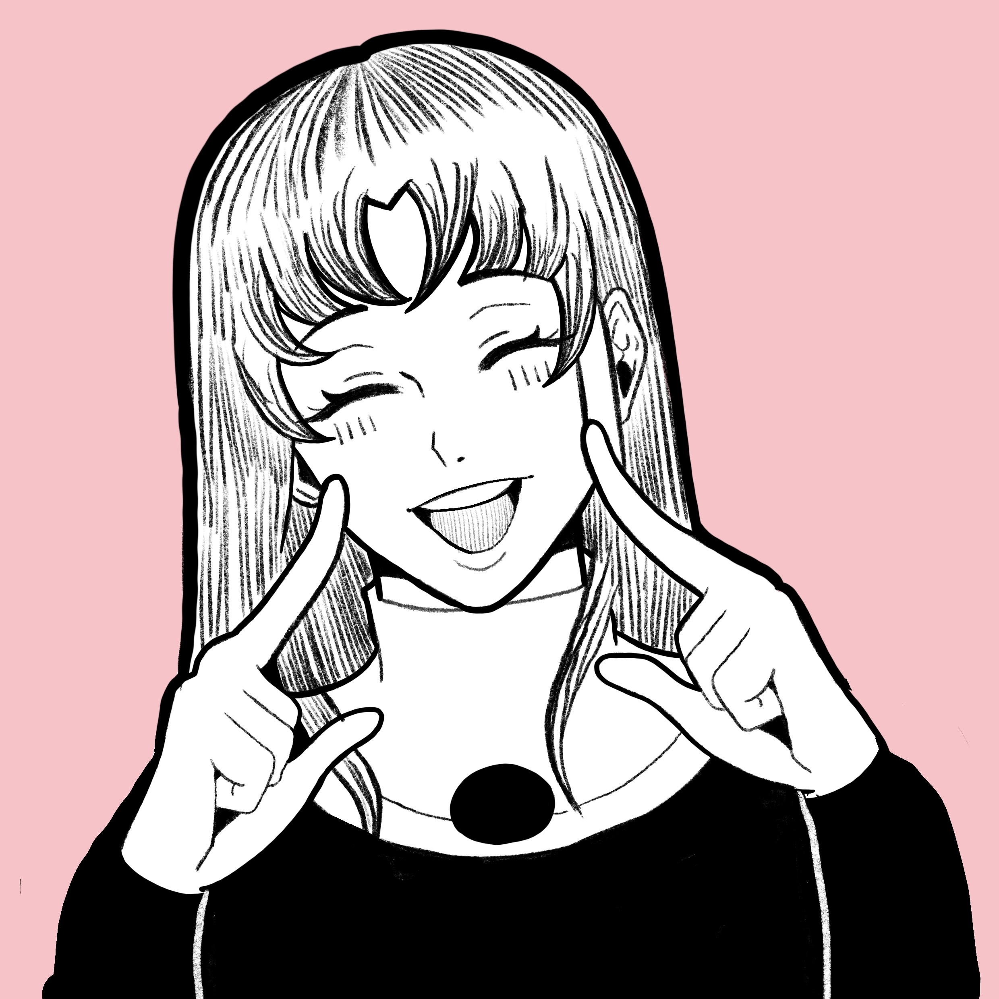

My doodle garden
Home
Logboek
Story
1
2
3
4
5
1. Schets
Komt nog tekst
Next
2. Lineart
Komt nog tekst
Next
3. Achtergrond
Komt nog tekst
Next
4. Dikke lijnen
Komt nog tekst
Next
5. Resultaat
Komt nog tekst
Terug




